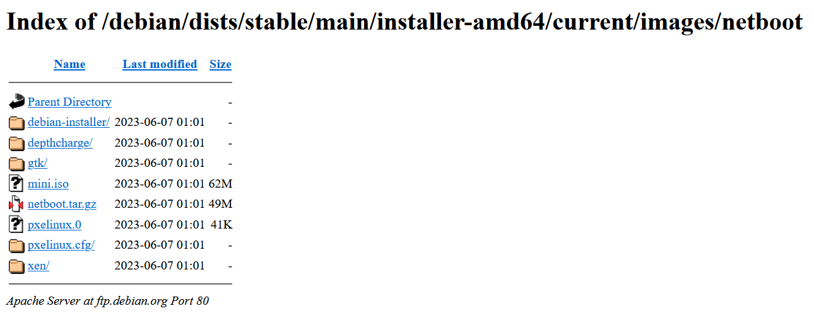
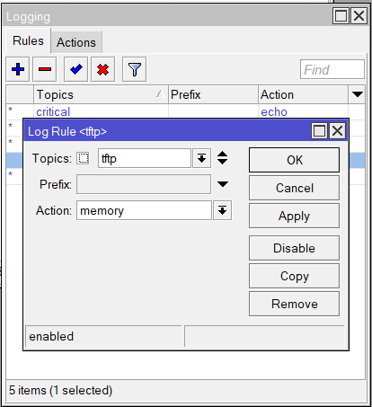
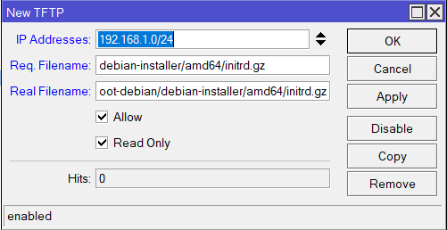

Preboot Exécution Environment (PXE) sur MikroTik CHR
Dans ce tutos, nous allons apprendre comment installer un système d'exploitation depuis le réseau via un serveur TFTP et un serveur DHCP. Nous allons pour le cas lancer l'installation Deian Server comme exemple pour notre serveur PXE.
Il existe plusieurs moyen de le faire avec comme le service WDS de Windows. Mais comme vous l'aurez ici nous le ferons avec un routeur MikroTik CHR.
Pré-requis :
Pour mener à bien notre projet, nous aurons besoin de :
- Un routeur MikrTik CHR
- Un poste client
Configuration :
Pour commencer, notre routeur aura deux interfaces :
- ether1 : 192.168.0.41/24 (WAN)
- ether2 : 192.168.1.1/24 (LAN)
Dans ce tutos, nous utiliserons l'interface graphique de MiktoTik.
Pour changer les adresse IP de vos interfaces, rendes-vous dans le menu IP » Adresses puis cliquez sur le l'icone du plus en haut de la fnêtre.
Pour ether1 :
Une fois que vous avez saisi l'adresse, cliquez sur OK et passez maintenant à ether2
Ensuite rendez-vous dans le menu IP » Pool pour créer une nouvelle plage d'adresses IP de notre serveur DHCP. Pour notre cas nous avons une plage d'adresses allant de 192.168.1.2 à 192.168.1.50.
Ensuite rendez-vous dans le menu IP » DHCP-Sever
Cliquez sur « + » pour metrre en place en place notre service DHCP en sélectionnant l'interface sur lequel sera mis notre DHCP et le pool que nous venons de créer.
Ensuite rendez-vous dans l'onglet « Network » pour y mettre les paramètres réseau pour notre client DHCP ainsi que le nom du fichier Bootfile Name
Nous devrions maintenant ajouter les fichiers nécessaire au boot et à l'installation des systèmes d'exploitation dans notre MikroTik.
Pour avoir les fichiers qu'il faut rendez-vous sur le site officiel de Debian puis télécharger netboot.tar.gz

Après avoir téléchargé le fichier, décompréssé-le et mettez le contenu dans un dossier nommé boot-debian
Ouvrez le fichier « default » qui se trouve dans le dossier « pxelinux.cfg » et modifiez le en mettant le contenu suivant :
Ensuite dans notre MikroTik rendez-vous dans le menu Files et glisser déposer notre dossier
Une fois que cela a été fait rendez-vous dans le menu IP » TFTP puis cliquez sur « + » pour renseigner le fichier pxelinux0.cfg
- IP Addresses : il faudra renseigner le réseau dans lequel se trouve notre serveur DHCP
- Req. Filename : il faut renseigner le nom du fichier sinon la syntaxe du fichier tel que cela est demandé lors d'un message d'erreur à l'écran d'installation ou dans les logs
- Real Filename : il faut mettre le chemin du fichier tel qu'il se trouve dans notre MikroTik
Ce qui donne :
Maintenant activez les logs dans MikroTik en allant dans le menu System » Logging puis cliquez sur « + »

Demarrez le un poste client en activant le boot réseau. Dans ce premier temps le poste client cherche à contacter le serveur TFTP
Une fois le TFTP trouvé, il cherche le serveur DHCP
Si le fichier pxelinux0.cfg est mal chargé, vous aurez ce message d'erreur
Si le fichier est bien chargé, il continue le processus de bootage en cherchant les fichiers un à un. S'il y en a qu'il ne trouve pas, un message d'erreur s'affichera à l'écran du poste client ou dans les logs MikroTik avec le nom du fichier demandé (Req. Filename) comme le montre l'image ci dessous :
A chaque fois qu'un fichier sera manquant, vous devrez le renseigner dans notre TFTP sauf si le fichier n'est pas obligatoire (mais nous sommes d'accord que si le fichier n'est pas obligatoire ça ne bloquera pas l'installation ?)
Après avoir renseigner le fichier dans TFTP, rebooter le post client
Après le redémarrage, de mon coté aucun message d'erreur m'indiquant le fichier à renseigner dans TFTP de MikroTik ne s'affiche à l'écran du poste client. Je vais donc consulter les logs
Une fois dans les logs nous pouvons bien voir que l'on me demande le fichier pxelinux.cfg/default. Ce qui est très différent que si le message d'erreur demandait default
Renseignons le fichier demandé dans notre TFTP
A chaque fois qu'un fichier sera demandé, renseigner le fichier puis rebooter le poste client
Après avoir rebooté, le fichier vesamenu.c32 est demandé
Rajoutez le fichier le plus facilement possible
C'est au tour de libcom.c32
Rajoutez le fichier
Le fichier libutil.c32
Avec un peu d'effort, vous arrivez mainteant à voir ce beau boot menu simple et unique
Mais malheureusement en cliquant sur install ça ne marche pas. Vérifiez vos logs et vous verrez qu'il demande le fichier debian-installer/amd64/linux
Ajoutez le fichier
Cette fois-ci en cliquant sur install cela fonctionne car nous pouvons dans les logs les fichiers d'installation qui sont en train d'être téléchargés
Au bout d'un moment le téléchargement des fichiers d'installation s'arrête et on vérifiant dans les logs vous verrez qu'il nous manque le fichier intrd.gz
Ajoutez donc ce fichier

Après avoir ajouter le fichier et rebooter le poste client. Cliquez sur install dans le boot menu et patientez un instant pendant le téléchargement des fichiers, vous verez ainsi notre page d'installation de Debian se lancer.
Ceci étant dit notre serveur PXE est bien fonctionnel et prêt à installer Debian sur n'importe quel poste client.
Voici un récapitulatif des fichiers renseignés dans notre TFTP